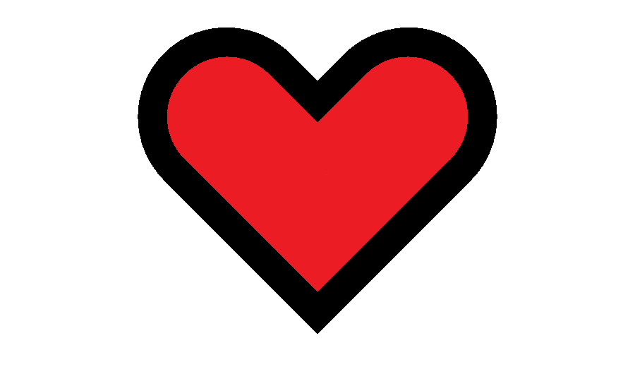
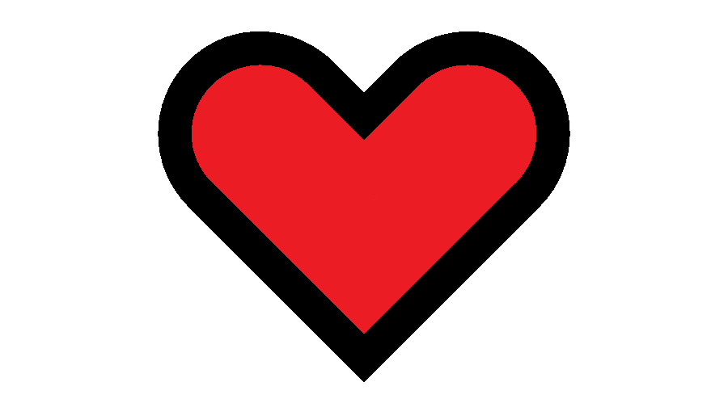
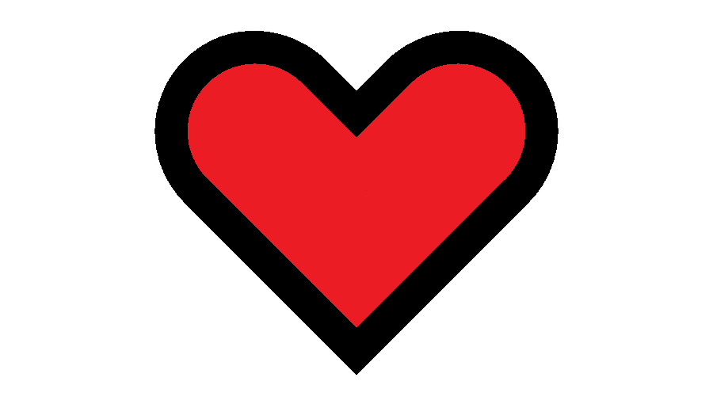
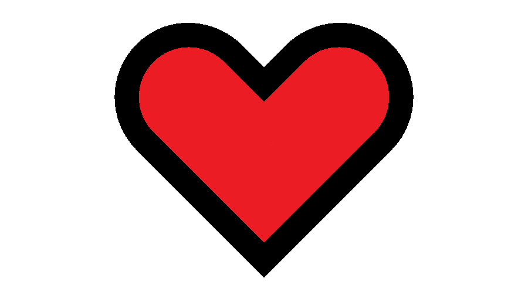

| Storlekar: | 50cm/40cm | 80cm/64cm | 100cm/80cm | 150cm/120cm |
| Ramar: | ek | metall | glas | ingen |
 



Det här är en målning av den kände Pedo Patronum, målningen föreställer en banan trophé han vann på den årliga karnivalen i hans hemstad Blackpool.
Om konstnären: Pedo Patronum född år 1960 i Blackpool vid Englands västra kust, som ung så brukade Pedo att bryta sig in på skolor på sin fritid med sina vänner Nonce C. och Jimmy S. under ett sånt inbrott så stal Pedo flera tavlor som senare skulle inspera honom att börja måla.
| Storlekar: | 50cm/40cm | 80cm/64cm | 100cm/80cm | 150cm/120cm |
| Ramar: | ek | metall | glas | ingen |